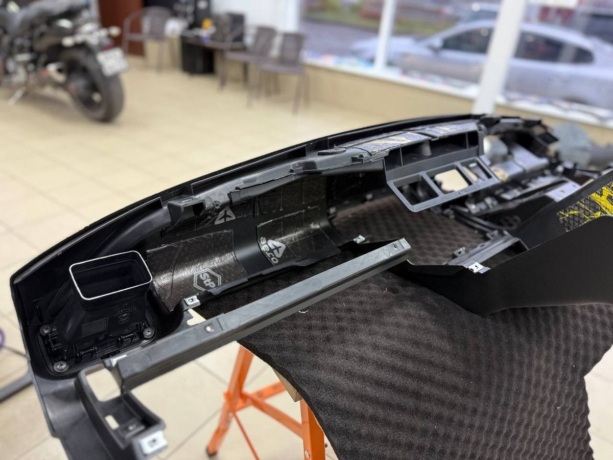
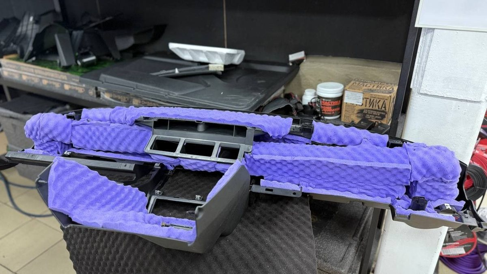
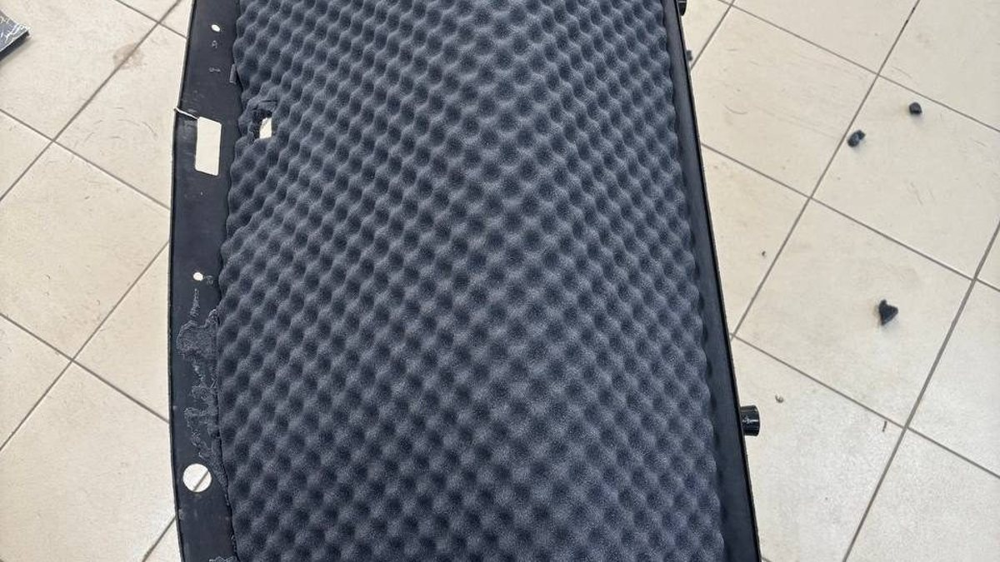

Семь утра, Брагино, минус двенадцать. Машина прогрелась, вы выезжаете со двора, и на первом же лежачем полицейском где-то справа в торпеде коротко щёлкает. Потом ещё раз. Потом к нему присоединяется дверь водителя: тонкий скрип, как будто кто-то трёт пластик о пластик. Вы включаете музыку погромче. До работы ещё двадцать минут, и все эти двадцать минут вы слушаете не музыку.
Днём, когда салон прогреется, половина звуков уйдёт. Вечером в пробке на Октябрьском мосту вернётся. И так до апреля.

Пластик в холоде становится твёрже и чуть меняет размер. Детали, которые летом плотно прилегали друг к другу, теперь касаются иначе: где-то появился зазор, где-то, наоборот, натяг. Клипсы, которые держат панели, с годами разбалтываются, а в мороз ещё и теряют упругость. Отсюда сухой щелчок на каждой неровности.
Двери добавляют своё. Обшивка крепится к металлу двери, и между ними работают уплотнители, тяги, жгуты проводов. Стоит одному элементу ослабнуть, и в холод он начинает тереться или стучать. Резинки уплотнителей зимой тоже дубеют и скрипят о кузов, но это уже другой звук, снаружи.
Главная подлость скрипов в том, что звук гуляет. Вам кажется, что щёлкает в центре торпеды, а источник – в углу у лобового стекла. Кажется, что скрипит подлокотник, а это обшивка стойки. Салон – закрытая коробка из пластика, и звук в ней отражается куда угодно.
Поэтому ремонт «наугад» обычно заканчивается одинаково. Человек снимает панель, проклеивает всё, что видит, собирает – и сверчок переезжает на десять сантиметров левее. Или остаётся на месте, потому что его там никогда и не было. Сломанных клипс после такого ремонта бывает больше, чем до.

Сначала – найти. Нужны двое: один ведёт машину по неровной дороге, второй слушает и по очереди прижимает рукой панели, накладки, бардачок, решётки динамиков. Если звук пропал под ладонью, место найдено. Делать это лучше на холодной машине, пока скрип ещё есть.
Дальше – понять, что именно трётся. Пластик о пластик, пластик о металл, жгут о панель, разболтанная клипса, ослабший винт. От этого зависит, что делать. Иногда хватает новой клипсы. Иногда в зоне контакта нужна противоскрипная лента или мягкая прокладка. Иногда жгут нужно притянуть к кузову, чтобы он не болтался.
Чего делать не стоит – заливать щели силиконовой смазкой из баллончика. Она на время убирает скрип, но собирает пыль, а в морозы помогает слабо. Через пару недель всё возвращается, только теперь панели ещё и липкие.
Если вы и так собирались делать шумоизоляцию салона, скрипы стоит решать вместе с ней. Панели всё равно будут сняты, и мастер пройдёт противоскрипом все места контакта, пока они открыты. Отдельно разбирать торпеду ради одного сверчка, а через месяц снова ради шумки – двойная работа и двойной риск сломать крепления.
Если же шумка вам не нужна, а мешает только скрип, честнее сказать об этом сразу. Искать и убирать конкретный звук – отдельная задача, и обклеивать ради неё весь салон незачем.
Запишите на телефон звук и место, где он появляется: двор, мост, кочка, скорость, сколько минут после запуска. Пометьте, на холодную он или на прогретую. Такая запись экономит время поиска, а время поиска – это то, за что вы и платите.
Мы в Ярославле – студия «Автостиль», проспект Октября, 82б. Монтаж у нас идёт вне зоны видимости клиента, поэтому каждый этап и каждый слой материала мы фотографируем и показываем вам. Про работы с салоном – на странице про шумоизоляцию. Позвоните, расскажите, где скрипит: +7 902 220-75-55.